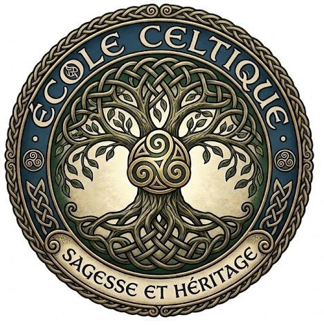
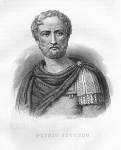
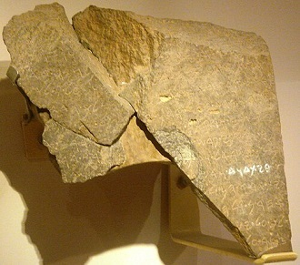
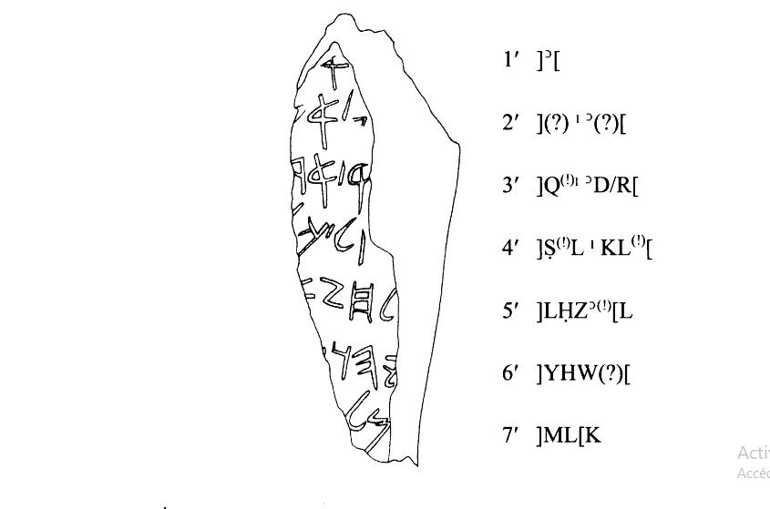

Pour un regard antérieur celtique sur l'histoire de l'Orient

Chercheur indépendant affilié à l'École Celtique, une initiative de recherche indépendante hors affiliation institutionnelle. Mes travaux portent sur l'analyse philologique et épigraphique des textes du Proche-Orient ancien, soutenant que plusieurs documents conventionnellement datés du IXe siècle avant notre ère ont été composés dans le milieu bilingue hérodien du premier siècle avant notre ère. Méthode centrale : datation par contextualisation externe et convergence d'intérêts, combinée à une redatation systématique.
Méthode centrale : datation par contextualisation externe et convergence d'intérêts — redatation de textes du Proche-Orient ancien (épigraphie araméenne, philologie comparée, cryptanalyse textuelle). Toutes les publications sont disponibles en français et en anglais, déposées sur HAL-SHS, Zenodo, Humanities Commons et indexées ORCID.
Independent philological and epigraphic research on ancient Near Eastern texts. Central method: external contextualization and convergence of political interests. Publications available in French and English on HAL, Zenodo, and HC Commons.

L'Évangile de Pierre dans la biographie de Pline le Jeune. Complément à la thèse publiée — DOI 10.5281/zenodo.20677971
Ce complément repart de Pline lui-même — sa formation rhétorique sous Quintilien, son rapport au droit, sa pratique de la lettre publiée, sa nomination en Bithynie, ses échanges X, 96-97 avec Trajan — pour montrer que la biographie, la bibliographie et la philologie de Pline le Jeune confortent en tout point la cohérence du premier sceau. L'Epistulae VII, 27 dite « La maison hantée » est la matrice narrative en huit étapes de l'Évangile de Pierre. Cinq niveaux de convergence indépendants — structure, chronologie, signature cognitive, habitus littéraire, profil biographique — désignent un seul et unique candidat.
Substitution, anti-datation politique et réaction militaire. Stylus primum, pilum deinde.
Cette étude philologique et historique attribue l'Évangile de Pierre à Pline le Jeune, rédigé en Bithynie-Pont vers 112 CE en qualité de Legatus Augusti. Motif politique identifié : couvrir la crucifixion du roi des Juifs à Pella le 14 Nisan 107 CE. Les anomalies textuelles — latinisme kenturiôna, docétisme involontaire, sept sceaux testamentaires — convergent vers un auteur latinophone cultivé du IIe siècle. La guerre de Kitos (115–117 CE) est la réponse des Juifs hellénistes à ce falsum impérial. Disponible en français et en anglais.

Quatre études philologiques et épigraphiques démontrent que la Stèle de Tel Dan, conventionnellement datée du IXe siècle avant notre ère, est un document fabriqué dans le milieu bilingue hérodien du Ier siècle avant notre ère. Arguments : chronologie relative, rétro-traduction en grec koïné, intertextualité avec les Psaumes de Salomon, critique du consensus paléographique de Demsky (1995). Méthode : datation par contextualisation externe et convergence d'intérêts. Publié en français et en anglais.
hal.science/hal-05610636 →
Le fragment de Tel Affis (2003, basalte lissé, vieil araméen, inv. TA.03.A.300) mentionne Hazaël — comme la Stèle de Tel Dan. Une correspondance philologique, sémantique et mécanique entre les deux inscriptions est démontrée : Tel Affis fournirait l'incipit HZʾL + MLK absent des trois fragments de Tel Dan. Publié en français et en anglais.
/papers/tell-afis.html →Le Livre d'Isaïe n'est pas un texte à couches rédactionnelles étalées sur sept siècles, mais un document écrit d'un seul tenant entre −76 et −67 avant notre ère, commandité par l'élite hasmonéenne pour unifier les juifs d'Orient et d'Occident. Méthode : datation par contextualisation externe et convergence d'intérêts politiques.
Décryptage verset par verset du Livre de Jérémie à l'aide d'une table de masques : Josias = Hyrcan II, Nabuchodonosor = Marc Antoine. Le texte est une chronique politique du Ier siècle avant notre ère, codée pour survivre à la censure hérodienne. Méthode : cryptanalyse philologique et datation par convergence d'intérêts.